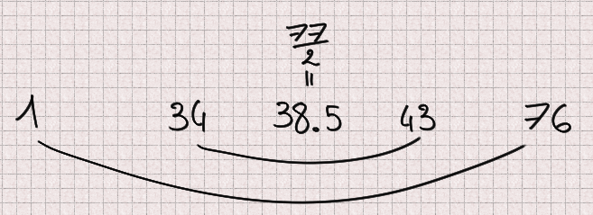

Review of Crypto for D
Context
I have always liked cryptography and code review and often take time reviewing open source code to help nurture a safer environment. About a year ago I decided to have a look at a cryptography library for D: shove70/crypto (also present on DUB at https://code.dlang.org/packages/crypto).
The version at the time was v0.2.7. I focused on RSA as a first step and found many issues that I communicated to the author on August 6, 2019. I was hopeful when I saw some first changes on the 8th of August and decided to give the author some more time to fix all issues.
A year later, v0.2.9, this is my updated review of the library. I do not claim to have found all possible issues but I am confident in the issues I do point out. Furthermore I intend no personal attack here, the author has proved very nice in all our exchanges. But I feel a responsibility toward the users to state things as they stand.
Wait, I'm a user, what should I know?
Long story short, I strongly recommend not to use this library.
RSA's key generation is unsafe because there are issues with prime numbers generation and selection
RSA's padding is broken and has important consequences such as allowing attackers to modify encrypted messages without knowing the secret key or decrypting some messages
No padding fit for RSA is implemented in the library even though correct padding is critical in RSA
The code is very confuse, with functions names that do not correspond at all to what is implemented as well as dead code and lots of "optimizations" of cryptographic algorithms
While I recognize the effort this implementation of RSA is broken from start to finish and puts its users in danger.
If you have used this library in production code and RSA in particular, then you should question the confidentiality and integrity of all messages encrypted this way. These messages are not safe.
If you are looking at a safer alternative I recommend looking at botan which I have not thoroughly reviewed yet but seems to avoid most pitfalls presented here. Furthermore it is a port of a popular library that was audited so there is less room for mistakes.
The rest of the article will be very technical with code and math involved. Sadly not much have changed since my first review so I will indicate any modification explicitly. We will start with prime number generation, continue with RSA key generation to end with RSA padding. I hope you enjoy the ride, grab a tea, it should be fun (in a somewhat hellish way).
Also, there will be ponies. Because it is going to be hard and we can all really use some friends.
Prime number generation
General strategy
Prime number generation is the basis of key generation in RSA. Crypto uses a two step strategy based on probable prime generation, which means that it uses algorithms that check that a number is prime with a high enough probability.
static bool isProbablePrime(const BigInt n, const size_t confidence)
{
bool passed = millerRabinPrimeTest(n, confidence);
/**
When n < 10_000_000_000_000_000,
there is no need to lucasLehmerTest, And trust the result of millerRabinPrimeTest.
*/
if (!passed || (n < 10_000_000_000_000_000))
{
return passed;
}
return lucasLehmerTest(n);
}As we can see the first step is performed by millerRabinPrimeTest which, contrary to what its name suggests, does not implement the Miller-Rabin prime test but the Fermat one. This function is discussed later.
We also see that the Lucas-Lehmer test is only used if n is bigger than 10¹⁶. Why? I do not know. Well implemented, Lucas-Lehmer a test that is good enough by itself, faster than Fermat or Miller-Rabin, but it only works for Mersenne numbers... And I do not see why it is limited to arbitrarily big numbers. Furthermore Lucas-Lehmer is a deterministic test, not a probabilistic one, so it is strange to use it in a function named isProbablePrime... If you are confused so was I. But I promise it will get clearer by the end of this section.
I am getting a bit ahead of myself though. This Lucas-Lehmer test is an addition compared to the first review so I will review it for the first time in this article. Spoiler alert: it is not even a Lucas-Lehmer test.
“Miller-Rabin prime test”: Fermat test
Prime number generation is done in the function BigIntHelper.millerRabinPrimeTest within bigint.d. Contrary to what the name suggests it actually performs a Fermat primality test, not a Miller-Rabin test.
static bool millerRabinPrimeTest(const BigInt n, const size_t confidence)
{
enforce(confidence > 0, "confidence must be a positive integer greater than 0.");
if (n < 2)
{
return false;
}
if (n == 2)
{
return true;
}
BigInt[] bases;
if (n < 1_373_653)
{
bases = [BigInt(2), BigInt(3)];
}
else if (n <= 9_080_191)
{
bases = [BigInt(31), BigInt(73)];
}
else if (n <= 4_759_123_141)
{
bases = [BigInt(2), BigInt(7), BigInt(61)];
}
else if (n <= 2_152_302_898_747)
{
bases = [BigInt(2), BigInt(3), BigInt(5), BigInt(7), BigInt(11)];
}
else if (n <= 341_550_071_728_320)
{
if (n == 46_856_248_255_981)
{
return false;
}
bases = [BigInt(2), BigInt(3), BigInt(5), BigInt(7),
BigInt(11), BigInt(13), BigInt(17)];
}
else if (n < 10_000_000_000_000_000)
{
bases = [BigInt(2), BigInt(3), BigInt(7), BigInt(61), BigInt(24251)];
}
else
{
if (!smallPrimesTable.all!((prime) => (powmod(prime, n - 1, n) == 1)))
{
return false;
}
/**
Although in theory base should be between 2 and n - 1, because
confidence is optimized before call, the larger n is, the smaller
confidence is, so the requirement for base cannot be too small,
so the minimum value does not use 2, but uses n / 2 instead.
*/
bases = new BigInt[confidence];
import std.algorithm.iteration : each;
bases.each!((ref b) => (b = randomGenerate(n / 2, n - 1)));
//bases.each!((ref b) => (b = randomGenerate(BigInt(2), n - 1)));
}
return (bases.all!((base) => (powmod(base, n - 1, n) == 1)));
}The Fermat test is not a correct choice:
It has false positives: Carmichael numbers will never be identified as composite numbers.
It is not faster than other better primality tests.
Furthermore the confidence numbers chosen are much too low. This is partly "justified" by an "optimization" consisting in choosing random tests between n/2 and n-1 instead of between 1 and n-1. This process has no effect whatsoever. The following section provides a proof of why.
The Fermat primality test for a possible prime p works by taking random numbers a1,a2,...,an and checking that for for each of those numbers ak^(p-1)-1 is a multiple of p. This property is always true for a prime number or a Carmichael number. This property is also verified for many composite numbers, just not for every number between 1 and p-1. I will call “liar” a number ak for which ak^(p-1)-1 is a multiple of p even though p is not prime.
For example 77=7×11 but 34^(76)-1 is a multiple of 77 and the same goes for 43: 34 and 43 are liars when testing 77. 1 and 76 are also trivial liars.
What I will show is that for any odd number n there are exactly as many liars below n/2 as there are above.
If n does not have any liar, then the property is verified.
Let's suppose that n has at least one liar: a.
We have:
Let's consider the number symmetric to a relatively to n/2: n-a
But n is odd, so
giving
So for any liar a we have proved that n-a is also a liar. Furthermore if a < n/2 then n-a > n/2 and inversely. Therefore there are exactly as many liars below n/2 as there are above.
This means that taking random numbers only between n/2 and n-1 has no effect regarding the chances to find a liar: the space is twice as little but there are twice as less liars resulting in a constant ratio and equal probability. This “optimization” optimizes absolutely nothing, it just serves to confuse the reader.
Aside from that, there is an addition in this new version: a pre-test using a list of small primes (from 2 to 241). It performs the Fermat test with each of these primes. I really have no idea why. I think the intent was to perform trial division by small primes but it is not trying to divide n so who knows. At the moment I cannot say that it serves any purpose.
“Lucas-Lehmer test”? Baillie-PSW!
Without much surprise, the function lucasLehmerTest does not perform a Lucas-Lehmer test.
So, I had some trouble identifying what the test was exactly due to the extreme dryness of the code but it seems to be a Lucas probable prime test within a Baillie-PSW test.
Let's back down a bit.
The first review that I communicated to the author included only the Fermat test discussed previously and I indicated that it was not sufficient. What I think happened then is that the author read the wikipedia article of the Fermat primality test, saw a reference to the Baillie-PSW and thought "here is a good way to improve my prime generation". And it is!
The basic idea of Baillie-PSW is that, since both Fermat and Lucas-Lehmer have false positives but these false positives do not overlap, whatever number passes both tests is almost surely prime.
This test has 3 steps:
Trial division by small primes
Base 2 strong probable prime test which is a special case of the Fermat test
Lucas probable prime test using a special Lucas sequence
Remember that we saw a table of small primes being used earlier? I think it was an attempt at step 1. It does not work that way though, but it makes sense within the Baillie-PSW test.
As for step 2 it is a special case of Fermat's test which is implemented in the function millerRabinTest. So we implemented step 2? Sadly no, that attempt fails too. Baillie-PSW requires strong probable primes base 2 which is not what we are producing.
Now, step 3 seems correctly implemented at first sight. However we have not checked that the number is a strong probable prime base 2 since step 2 is botched. Therefore the input of our Lucas probable prime test is not in the correct form to get the certitude we expect from that algorithm.
I should mention that nothing in Baillie-PSW justifies skipping step 3 for numbers smaller than 10¹⁶.
Besides, I admit that knowing all these issues, I did not spend much time checking the implementation of Lucas probable prime test. I hope you can forgive that moment of laziness.
Feel free to read it yourself, fresh from bigint.d:
/**
Returns true if n is a Lucas-Lehmer probable prime.
The following assumptions are made:
BigInt n is a positive, odd number. So it can only be call after
millerRabinPrimeTest is passed.
*/
static bool lucasLehmerTest(const BigInt n)
{
immutable BigInt nPlusOne = n + 1;
int d = 5;
while (jacobiSymbol(d, n) != -1)
{
// 5, -7, 9, -11, ...
d = (d < 0) ? abs(d) + 2 : -(d + 2);
}
return lucasLehmerSequence(d, nPlusOne, n) % n == 0;
}
static BigInt lucasLehmerSequence(const int z, const BigInt k, const BigInt n)
{
bool testBit(const BigInt n, const int m)
{
int digit = cast(int) (n.getDigit!uint(m >>> 5));
return (digit & (1 << (m & 31))) != 0;
}
BigInt d = z;
BigInt u = 1, u2;
BigInt v = 1, v2;
for (int i = cast(int)(k.uintLength * uint.sizeof * 8 - 2); i >= 0; i--)
{
u2 = (u * v) % n;
v2 = (v * v + d * u * u) % n;
if (testBit(v2, 0))
v2 -= n;
v2 >>= 1;
u = u2; v = v2;
if (testBit(k, i))
{
u2 = (u + v) % n;
if (testBit(u2, 0))
u2 -= n;
u2 >>= 1;
v2 = (v + d * u) % n;
if (testBit(v2, 0))
v2 -= n;
v2 >>= 1;
u = u2; v = v2;
}
}
return u;
}So... What's the conclusion on prime generation?
See, the issue when you start implementing fantasies into cryptographic code is that while it is most certainly bad it can be quite hard to say how bad exactly.
What I can say is that no step of the prime number generation was implemented correctly. It is therefore my professional opinion that this algorithm should not be trusted to produce consistently strong primes, or even primes at all.
Key generation
The relevant part of the key generation process, as implemented, is the following:
The process at the moment is essentially:
Determine how many primality tests will be done based on key size
Generate probable prime numbers
Use 65337 as public exponent
Compute the private exponent using Euler's totient
Encode the key pair
Here is the relevant code from rsa.d:
static RSAKeyPair generateKeyPair(uint bitLength = 2048)
{
assert((bitLength >= 128) && (bitLength % 8 == 0),
"Bitlength is required to be a multiple of 8 and not less than 128."
~ "It’s recommended that it be no less than 2048.");
BigInt x, y;
BigInt ex_gcd(BigInt a, BigInt b)
{
/* gcd ... */
}
BigInt cal(BigInt a, BigInt k)
{
/* private exponent computation ... */
}
size_t confidence;
if (bitLength <= 128) confidence = 50;
else if (bitLength <= 256) confidence = 27;
else if (bitLength <= 512) confidence = 15;
else if (bitLength <= 768) confidence = 8;
else if (bitLength <= 1024) confidence = 4;
else confidence = 2;
BigInt p, q, n, t, e, d;
do
{
p = BigIntHelper.randomGenerate(bitLength / 2, 1, 1);
}
while (!BigIntHelper.isProbablePrime(p, confidence));
do
{
q = BigIntHelper.randomGenerate(bitLength / 2, 1, 1);
}
while (!BigIntHelper.isProbablePrime(q, confidence));
n = p * q;
t = (p - 1) * (q - 1);
e = 65537;
d = cal(e, t);
return RSAKeyPair(encodeKey(n, d), encodeKey(n, e));
}This process is rather text-book, but books are simplified. There is a number of flaws in this process. Essentially there are techniques to easily factor prime numbers that verify some properties. The most prevalent of these properties are:
(p-1) or (q-1) has many small factors
(p+1) or (q+1) has many small factors
p and q are close to each other in absolute value (|p-q|<2^(bitLength/2-100))
The smaller the prime number, the more important these properties are, so it is strongly discouraged to use probable primes for keys smaller than 2048 bit long.
As it is, the primes randomly generated but no condition is enforced.
The default key length has been updated from 1024 to 2048 which makes these checks a bit less necessary, but the library does not warn the user that their key generation is unsafe if they decide to use a smaller key size.
I would recommend refusing key sizes under 1024, or accepting them with warning that these keys are too small for modern use as well as implementing weak prime detection in all cases.
Padding
RSA needs padding for different reasons than a block cipher and therefore block cipher paddings are not adequate for RSA. A bad padding could go as far as leaking the message or even the private key.
Here I made a mistake in my first review. I mistakenly thought that the default RSA padding used is "Customized". In fact each message is prefixed by one random byte. Upon decryption that random byte is simply discarded.
In rsa.d:
static ubyte[] crypt(string T)(RSAKeyInfo key, ubyte[] data, bool mixinXteaMode)
{
/* ... */
{
// Prevent preamble 0, and make the encrypto results random
ubyte preamble = rnd.next!ubyte(0x01, 0xFF);
blockSize = (keySize <= data.length) ? keySize : data.length;
while (true)
{
ubyte[] block = [preamble] ~ data[0 .. blockSize];
BigInt t = BigIntHelper.fromBytes(block);
if (t >= key.modulus)
{
blockSize--;
assert(blockSize > 0, "Key bits is too small.");
continue;
}
return t;
}
}
}This short padding is not safe and we will discuss two attacks that rely on padding exploitation alone.
Padding bruteforcing
First of all, why is there padding here at all? Padding-less RSA is well known under the name "Textbook RSA" and has many well-documented flaws. One of them is that two identical messages will produce two identical ciphertexts. Since in RSA the attacker is supposed to have the public key (it is public after all) he can encrypt as many messages as he wants and compare them to an unknown ciphertext until he gets an identical ciphertext. He then knows that the two messages are the same, effectively decrypting the message.
This attack works particularly well on protocols that are highly repetitive or have few possible messages ("ACCEPT"/"DENY").
Given the comment "make the encrypto results random" it is clear that the author knew about this issue and wanted to make it so two messages produce two different ciphertexts.
However one byte of randomness is not much. It only represents 256 possibilities. This does make it harder in many situations, but when few messages are possible an attacker can quite easily encrypt each possibility 256 times for comparison.
Message modification
Given an encrypted message it is possible to create a different encrypted message, derived from the first, without any key (not even the public one).
To understand how we must first think about our padding in mathematical terms. In RSA our message is not an array of bytes but a number. Adding a value s before that corresponds to the addition of our number-message m and s shifted to the left (so multiplied by some power of 2 in base 2) by an amount relative to the length of m written in base 2 (so log2(m), let's call it l). All of this is taken to a large power that we will call e to produce a ciphertext: c.
The question we must now ask is, how can we produce another valid message c' (therefore, of the same structure) given these conditions? Let's see what happens when multiplying that encrypted message by 2^e:
If 2s still fits in one byte, that padding byte will be discarded and we will have successfully crafted the message 2m (or m with an added 0 at the end) without knowing m. Otherwise if 2s doesn't fit in one byte then we will get 2m prefixed with a bit of padding left attached, which is still an interesting result. In either case the padding is not able to detect the modification.
To take a concrete example, let's consider the message 0x42. That message is padded with a random byte, 0x12 for example, to form the padded message 0x1242. The encrypted message can then be written schematically:
Upon decryption of this modified message the first byte (0x24) is discarded leaving the message 0x84. All we had to do was multiply by 2^e.
This message malleability may not sound very dangerous, but with a bit of work to identify other deterministic changes it can prove a very effective attack to modify all or part of the message through its encryption.
I have talked before about how important it is for encryption to be authenticated to avoid modifications. If you have not read it that article proposes a short demo of attack through encryption to steal money by modifying unknown encrypted messages. It may be a toy example but I have seen similar issues in real life.
Other issues may exist with this padding, but even from the first results it is clear that it should not be used as it is. Padding is critical in RSA and improvising a solution is not the way to go.
Bonus exercise
Try seeing why the "Customized" padding (which appends NUL bytes then the message length to the message) would not be a good fit for RSA. Hint: you can apply a reasoning very similar to the one outlined here.
Solutions
Given that the library wants to support short (<=1024 bits) keys I believe it should switch entirely to generating provable primes that enforce the different properties we discussed. This means however scratching most of the code already written. Another alternative would be to use Miller-Rabin but in that case I strongly advise checking the prime conditions and disallowing short keys. Keys shorter than 1024 bits should not be used in 2020 anyway given that we have reached the computing power necessary to attack them consistently.
In any case it is best to follow a strong standard. In that case I recommend FIPS 186-4 section B.3.1, B.3.4 and B.3.5. This US standard is generally considered very strong.
Regarding padding, different properties are required depending on whether the keys are used for encryption or signature. I recommend implementing the two standards OAEP for encryption and PSS for signature as described in RFC8017.
Note that key generation must also be modified for signatures, so I am mainly indicating PSS as a general reference.
The current padding should be changed as it is absolutely dangerous. Similarly name confusions and useless code only add to the difficulty of verifying that the algorithms are implemented correctly. They must be fixed and removed.
The avid reader will find more RSA-related attacks and studies in the splendid paper Twenty Years of Attacks on the RSA Cryptosystem by Dan Boneh.
Conclusion
While I salute the effort made in creating and maintaining a useful library, I think the issues identified show clearly that the author is no cryptographer. I do not blame anyone for getting things wrong, nobody is expected to get cryptography right the first time (not even cryptographers), which is why the mantra "do not roll your own cryptography" is so often repeated. However I cannot recommend anyone to use a library written by someone that does not understand the consequences of his code and I regret leaving these issues unfixed for a year.
The best way to implement cryptography is to absolutely refrain from inventing anything and strive to follow a strong, proven standard as closely as possible. It is also easier to spot implementation errors that way.
So, if I had only one advice for programmers wanting to write cryptographic code:
Please
Leave your brain at home.
Cryptographic code is definitely important and programmers should not be afraid of implementing cryptographic primitives. However it must follow the guidelines down to the last detail. This is not the place for smart optimizations, or for taking ideas left and right and expecting them to fit together. It does not work that way.
That said, if you do write cryptographic code and would like someone to take a look feel free to reach me. I always make time for free software that cannot afford security code review through traditional means.
I hope you enjoyed this case study. Please do not hold it against the author of Crypto, I may be harsh in my criticism but he was really nice in all our exchanges and his attempt, misguided as it is, tries to fill a real need of our ecosystem.
Image sources
https://www.deviantart.com/yanoda/art/Unamused-Fluttershy-298158404
https://www.deviantart.com/myardius/art/Sweetie-Belle-looking-up-315460579
https://www.deviantart.com/iamadinosaurrarrr/art/Apple-Bloom-Being-Cute-358019405
https://www.equestriadaily.com/2018/01/editorial-why-i-love-me-some-starlight.html
https://www.deviantart.com/the-smiling-pony/art/Rarity-01-252735198